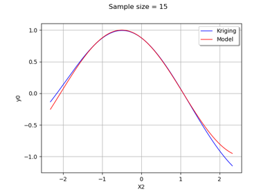
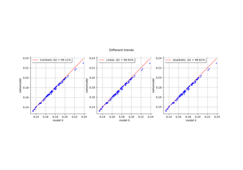
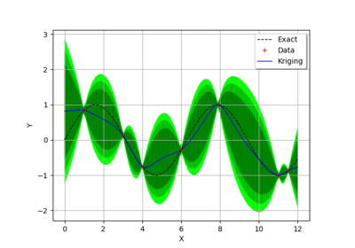
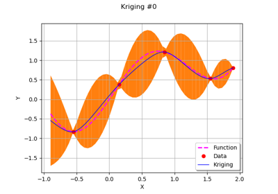
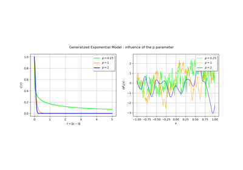

Kriging metamodel¶


Kriging : multiple input dimensions
Kriging : multiple input dimensions


Example of multi output Kriging on the fire satellite model
Example of multi output Kriging on the fire satellite model


Choose the trend basis of a kriging metamodel
Choose the trend basis of a kriging metamodel



Kriging : quick-start

Sequentially adding new points to a kriging
Sequentially adding new points to a kriging



Kriging : draw covariance models
Kriging : draw covariance models